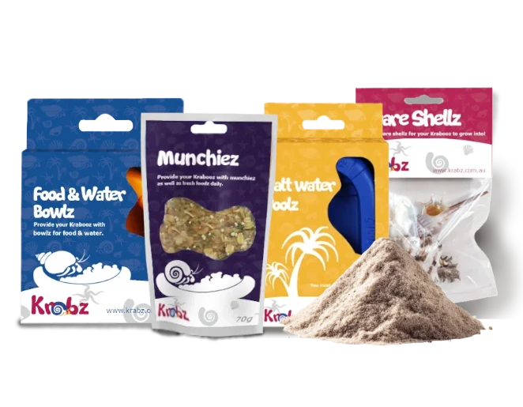
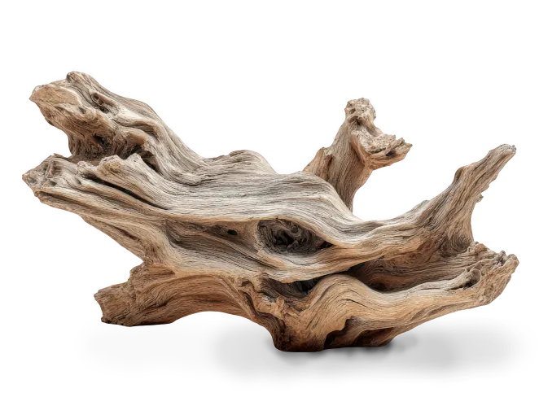
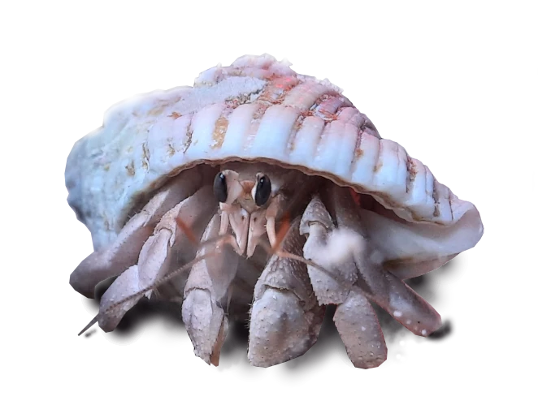

Care Guide
Welcome to our Care Guide! If you are new to Krab keeping, we are here the whole way! In this guide, we will have a look at the Krabz basic needs and share with you some other helpful resources. WHile these pets are known to be low maintainance and easy to care for, they are actually tropical animals and have specific care requirements that go just a little beyond beginner level. But don't worry, we are here all the way!
- What essentials do these exotic pets need to survive?
- How to handle your little friends safely
- What are normal Krab behaviours and what are behaviours of concern?
- Frequently asked questions and answers
- More useful resources
Essentials
Hermit Krabz require a deep aquarium with plenty of moist sand. This allows them to dig. They also love to climb driftwood and decor. Here are the beginner essentials that you will need!

Starter Bundle
Grab the essentials for up to $10 off!

Shells
Providing up to 3 spare shells per Krab prevents shell fights.

Driftwood
Give the Krabz excercise and make your aquarium look fabulous!

Krabz
Find your nearest pet store (instore only)
Getting Started
Housing
A glass aquarium makes the absolute best housing because the glass keeps the warmth and humidity in well and you are able to easily see your little friends. But please note, these Krabz are land dwelling and can't survive under water! Decorate their home with beautiful driftwood for them to climb on, and non-toxic plastic plants and hiding places.
Fill the floor of the aquarium with moist playsand. We recomend at least 6 inches deep so that the Krabz have plenty of room for digging their little tunnels. The sand should be pliable, but not soggy. We call this "sand castle consistancy". If it is too dry, the Krabz will struggle to create tunnels, and can lead to surface moulting which is unsafe for them.
Heat and humidity are very important, for this set up, you will also need heating pads, themometer and a hydrometer. If you life in a cooler sate like Victoria, you might also need a heat lamp. Thermostats are very handy when relying on heatlamps.
Handling
To hold a Krab, gently grab thier shell with your fingers - but be mindful of it's little claws. Place them on the palm of your hand flat. they will climb, and are not likely to pinch you unless they are afraid of falling. Never grab their delicate legs or claws.
When handled, some Krabz become very shy and hide in their little shells. This is normal behaviour. It is also normal for them to hide for minutes at a time - especially when new from the petstore.
Food and water
Feed the hermit Krabz fresh fruit and veggies. Our Aussie Krabz also love meat such as fish and chicken, pumpkin seeds, dried shrimp and cuttle bone is good for them too. They will also eat the driftwood.
Hermies need access to salt water, especially when they are about to moult. They also need fresh water pools. Having more than one fresh water pool will help keep the humidity levels up (which need to be up to 80%).
Frequent Q&A
Are Krabz beginner friendly pets?
Krabz are delicate tropical animals. While their everyday needs are low maintainance, the set up and care requirements can seem overwelming to some beginners.
My Krab has no shell! What do I do?
While krabz leave thier shells behind when stressed, unwell or their shell got stuck somewhere, there are some things we can do. first, prepare a shallow container by putting some sand from the aquarium in there (this makes sure the sand is nice and warm). Place shells in there that are around the same sort and size as the other shells in there, and carefully place the container on the floor of the aquarium. It doesn't have to be a large container.
Then, with rinsed hands (no soap! it is toxic to them) very carefully scoup the Krab up and place it with the shells in the container. Turn the lights off or cover the aquarium, and wait. Leave it alone, and hopefully, within hours, it will find a new shell.
When it is in a new shell, you can carefully place it back in the aquarium with the other Krabz.
Can I just have one Krab?
Krabz are social creatures and live in large colonies out in the wild. Keeping them alone isn't best for their happiness and welbeing. We recomend at the absolute bare minimum keeping two. Four or more is best for them so they can socailise.
My Krab won't move - is this normal?
Yes, especially if they are new and stressed. Otherwise, they may be moulting. Continue offering them food, and they should eventially move. Don't rush to thinking a Krab is dead - if they are dead, they will smell pretty bad. If they don't smell, they are most likely alive and just need peace and quiet.
How long do they burry themselves underground?
Krabz can bury for months at a time (hence why having more than one tank mate is important!) and it is normal and safe for them to do so. Never dig them up unless it is an emergancy such as moving house, the tank is flooded or deep cleaning pests. You could dig one up that is moulting and it will die.
Resources
Hermit Crab Association
Join the HCA Community Forum to learn about other peoples experiences with Krab keeping. If your Krabz are showing signs of moulting, or you have specific questions, there will always be someone to help you any time. In this community, there are also opportunities to post about your Krabz and make new friends!
Crab Central Station
Finally, we recomend the amazing Crab Central Station created by Darcy who has a huge passion for Krabz! She covers a huge range of topics from moulting, general crab care, creating amazing enclosures and even breeding!